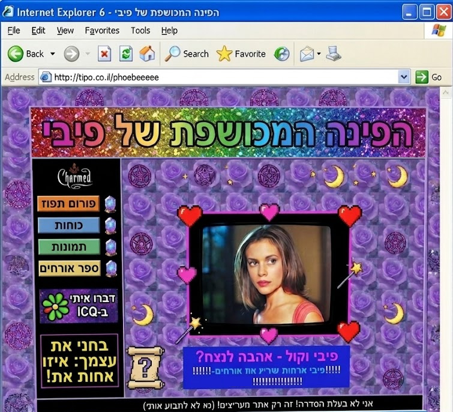
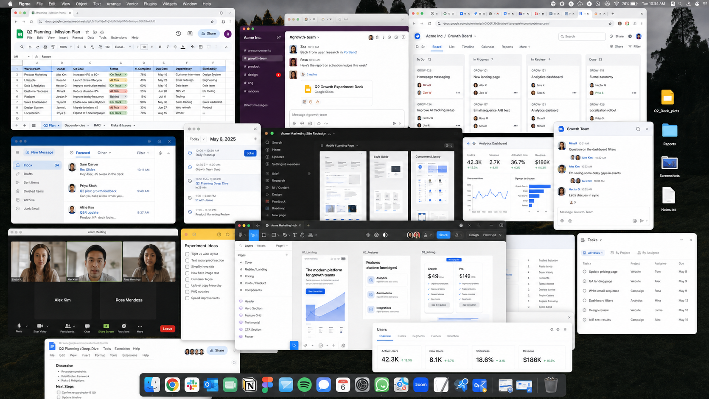
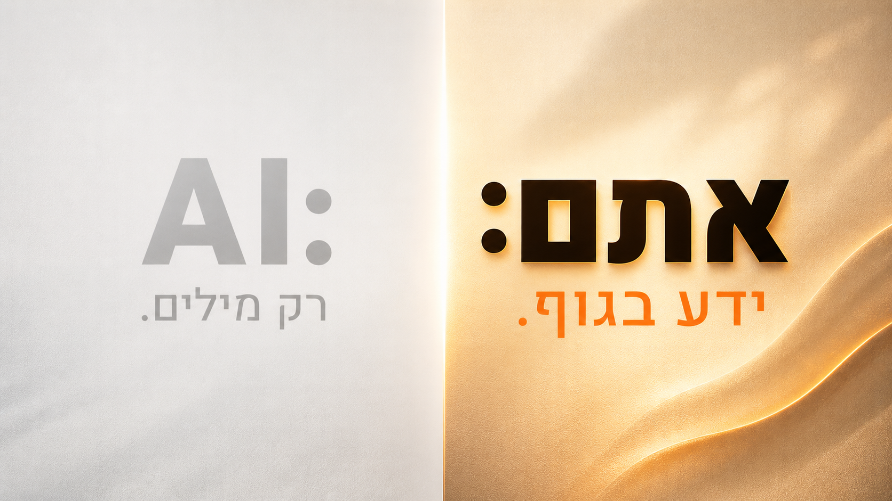

1
/
-
Space
↑
↓
·
N
notes
SPEAKER NOTES
חצות.

ליצור משהו
שלא היה קיים לפני.
יצרנו משהו מאפס, נכנסנו לטראנס, לפלואו, .
התאהבתי.
בכאוס. ביצירה.
בלהתחיל עם קנבס ריק ולסיים עם מוצר.
9
שנים.

Spreadsheet
Figma
Jira
Slack
Zoom
Notion
Confluence
Miro
Calendar
Email
Analytics
Mixpanel
Drive
Slides
Okta
Loom
Linear
Retool
Amplitude
Monday
פגישה
←
פגישה
←
פגישה
←
פגישה
←
פגישה
על פגישה.
מפעל
ייצור.
״
לא אני יוצרת.
מייצרים דרכי.
״תכתוב מזה פוסט לינקדאין חזק.״
מבנה מושלם.
בעל סמכות.
הפוסט שלי
לפני 3 שעות · 🌐
👍 142
💬 18
↗ 7
פוסט של קולגה
לפני 5 שעות · 🌐
👍 156
💬 22
↗ 9
אותו מבנה. אותו אורך.
אותו קול.
לא כתבתי פוסט.
הפעלתי אלגוריתם.
הפסקתי לחשוב.
ולא שמתי לב.
סבבה.
הסגרתי אותה
לרשויות ה-AI.
בשלב מסוים התחלתי לעבוד בצורה קצת אחרת עם AI...
לא מייצרת.
יוצרת.
אני פה כי מצאתי את הילדה הזו שוב.
בטעות.
גל דולב
PM & AI Lead · Guide
לא הכלים.
הבנה אחת עמוקה.
על מה רק בני אדם יכולים לעשות -
ולמה דווקא עכשיו זה היקר ביותר שיש לנו.
· · ·
ואני הולכת לתת לכם
את זה היום.
מה שלמדתי אחרי עבודה עם אלו שבונים את המודלים AI:
AI הוא מלך הממוצע.
AI
ממוצע
חדשנות היא
סטיית תקן.
אתם
אתם
מעצבים שמוציאים תוצרים מעולים מ-AI
עושים שלושה דברים אחרת.
01
הם נודדים לפני שהם כותבים פרומפט
02
הם שומעים מה שלא נאמר
03
הם מחברים הכל למקום אחד
עיקרון 1
המוח שלכם מייצר חדשנות
כשהוא נודד.
זיכרון
רגש
חלום
תובנה
גוף
DMN
אינטואיציה
לוגיקה.
אסוציאציה פרועה.
תזכורת לתרופה.
שתי גרסאות.
AI
Reminder
הגיע הזמן לקחת תרופה
אישור
אנושי
הודעה לבן/בת הזוג
אמא לא אישרה את התרופה.
תזכיר/י לה? 💛
שלח
תזכורת זה לא הפתרון.
אחריות משותפת - כן.
AI לא היה
בריב בבוקר.
הסטייה שלכם היא
הסחורה היקרה ביותר בשוק.
טיפ פרקטי
לפני הפרומפט הראשון -
תנו למחשבות לנדוד.
1
חכו
תחכו רגע עם הפרומפט.
תנו לעצמכם לחשוב קודם.
2
נדדו
5 דק׳ אחרי ראיון - כתבו.
10 דק׳ ברייק - דף A4 וקשקוש.
3
פתחו כלי
ותנו לו 3 בולטים
ייחודיים לכם.
QR
עיקרון 2
AI מדויק סטטיסטית.
אבל לא קורא את החדר.
AI
אדם
שאלות פשוטות
AI
אדם
שאלות מורכבות
דירוג ע״י מבקרים
סאבטקסט. רגש.
לא במילים.
בשאלות פשוטות - AI מנצח (כי אנחנו מסבכים). אבל הסאבטקסט?
שלכם.
אנחנו יודעים יותר
ממה שאנחנו
יכולים להגיד.
אתם יכולים לזהות
פנים
של חבר ילדות בתוך אלף פנים - אבל לא תוכלו להסביר איך.
אתם יודעים לרכב על
אופניים
- אבל לא תוכלו להסביר למישהו בדיוק איך.
ואתם יודעים, ברגע אחד, כש
לייאאוט
פשוט לא עובד - ולא תמיד תוכלו לפרק את זה לכללים.
אתם
מומחי ידע סמוי.
הגוף שלכם צבר, במשך שנים של חיים, של ראיונות, של צפייה ביוזרים, של להיות בן אדם בעולם -
ידע שאף אחד, גם לא אתם, לא יכולים לנסח במילים.
והידע הזה הוא הדבר הכי יקר שיש לכם.

טיפ פרקטי
השתמשו באינטואיציה שלכם.
סמנו
רגעים שבהם
״אני יודע/ת שזה לא עובד,
אבל לא יודע/ת למה.״
הישארו בחדר
אלה הרגעים שלכם.
שהו בבעיה.
תחליטו
AI יבצע -
אחרי שתחליטו.
QR
מזל טוב.
קודמתם ל-
VP Design.
ו-AI הוא הג׳וניור.
עיקרון 3
שני הדברים הראשונים תמיד היו שם.
מה שהשתנה - הכלי שמחבר ביניהם.
Figma
Jira
Slack
Notion
Calendar
Zoom
Miro
Confluence
Email
Drive
Mixpanel
Linear
Loom
Amplitude
Okta
Slides
~20 כלים.
חיתוכים של תשומת לב.
עד עכשיו
.
כלי אחד. מחובר להכל.
מערכת ההפעלה שלכם.
הכלי
שלכם
Figma
Jira
Slack
Notion
Calendar
Mixpanel
Linear
Drive
בחרו כלי.
Cursor
Claude Code
?
לא משנה מה תבחרו -
העיקרון זהה.
עיניים
הוא רואה מה שאני רואה.
פותח דפדפן, נכנס לאתר מתחרה, מצלם מסכים, גולל בפלואוים.
מהסרטון:
הרגע שהאייג׳נטים גלשו אצל מתחרים.
זיכרון
הוא יודע מה שאני יודעת.
📄 קובץ קונטקסט
- סטטי
Figma · Jira · Mixpanel
- חי
מהסרטון:
ציור ביד הפך לעיצוב לפי הדיזיין סיסטם - כי הוא זוכר.
ידיים
הוא בונה. לא רק מייעץ.
הקוד הוא המדיום. ה-AI כותב אותו.
אתם מכוונים.
מהסרטון:
בניתי משחק Sims כדי להציג מידע.
״תעבור על הonboarding של 5 מתחרים ותדביק לי את כל הפלואו בפיגמה.״
״תהפוף את הקומפוננטה הזו לאנימציה.״
״תייצר לי מהעיצוב הזה פיצ׳ר באפליקציה.״
יום עבודה
←
רץ ברקע.
טיפ פרקטי
כלי אחד. חברו הכל. ותכנסו לפלואו.
1
בחרו כלי אחד בלבד.
2
חברו אליו עיניים, זיכרון, וידיים.
3
תנו לו לעבוד -
בזמן שאתם יוצרים.
QR
סשן של קראפט.
הקראפט החדש.
אותה נשמה.
form אחר.
הפער בין רעיון לביצוע
נמחק.
ציור
←
Cursor
←
אנימציה
קוד שמיש וסקיילבילי
כל דבר שרק תרצו
הגוף שלכם, הילד שבכם,
ההבנה
שלכם
את היוזר -
זו הסחורה היקרה ביותר
בשוק.
AI הוא המנוע.
אתם הלב.
ליצור.
לא רק
לייצר
.
10 טיפים פרקטיים + מדריכים + משאבים.
במתנה.
גל דולב